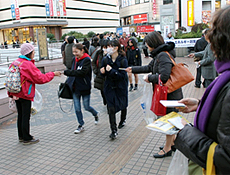
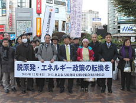
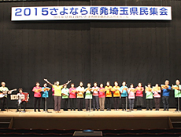
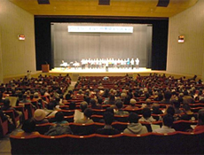
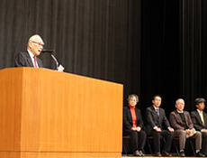
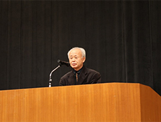
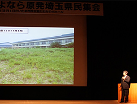
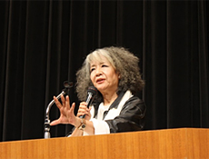

脱原発と再生可能エネルギーの促進を確認しました
九州電力川内原発1号機2号機の再稼働、また四国電力の伊方原発3号機も再稼働が準備されているなか、12月4日(金)、18時15分より｢2015さよなら原発埼玉県民集会実行委員会｣の主催で「2015さよなら原発埼玉県民集会」がさいたま市民会館おおみや大ホールで開催され、900人が参加しました。集会に先立ち、16時15分より、JR大宮駅西口デッキにて脱原発等を呼びかけるティッシュ配付を行いました。なお、実行委員会は脱原発を求める県内の19団体・個人で構成しました。
≪大宮駅西口デッキでアピール≫16時15分～16時45分
|  |  |
| JR大宮駅西口デッキにて約30人が参加し、｢脱原発!エネルギー政策の転換を｣｢さらなる再稼働反対｣を呼びかけるティッシュを配付しました。 | |
≪2015さよなら原発埼玉県民集会の概要≫18時15分～20時30分
アトラクション「埼玉のうたごえ協議会＆埼玉のうたごえ9条の会」～
|  |  |
| 電気ピアノ・ギター・アコーディオンの伴奏で、｢民衆も歌｣｢空よりも高く｣｢ヒロシマのある国で｣の平和関係の歌を披露いただきました。 | |
□主催者団体紹介と実行委員長あいさつ
実行委員長
田中 熙巳（埼玉県原爆被害者協議会会長）
副実行委員長
森 和江(埼玉県婦連副会長)
岩岡 宏保(埼玉県生協連会長)
佐藤 俊一(県原水協事務局長)
田中実行委員長は「残留放射線による被害は今も続いています。原発再稼働を許さず、差し止める運動を展開していきたい」と挨拶しました。
□福島からの報告
 「東電と国への原発事故訴訟について」 井戸川 克隆さん(前双葉町町長)
「東電と国への原発事故訴訟について」 井戸川 克隆さん(前双葉町町長)
原発の事故、核の平和利用の崩壊、負担だけを課す原発政策をみんなで止めましょうと話されました。
 「福島の教育現場で」 日野 彰さん(福島県教職員組合災害担当執行委員)
「福島の教育現場で」 日野 彰さん(福島県教職員組合災害担当執行委員)
福島の地域や学校等の現状を説明し、｢事故の原因究明と責任の所在を明らかに｣｢福島の犠牲を無駄にしない｣等、福島の教訓を未来に生かしてほしいと話されました。
|  |  |
| 井戸川 克隆さん | 日野 彰さん |
□募金のお願い
佐藤副委員長よりお願いしました。
□講演
「いのちの感受性････さようなら原発・さようなら戦争の時代へ」
落合 恵子さん（作家・クレヨンハウス代表）
毎週土曜日に朝に原発を考える学習会を 開催しています。原発政策にノーを訴えていきましょう。また、加須市に避難している方への取材のエピソード等通し、市民は真っ直ぐなのに、この痛みと温かさがわからない人たちがいます。人生は名詞でなく 動詞、私は動き続けます。
□決議
森副委員長より提案し、確認されました。
□閉会あいさつ
持田副委員長があいさつされました。